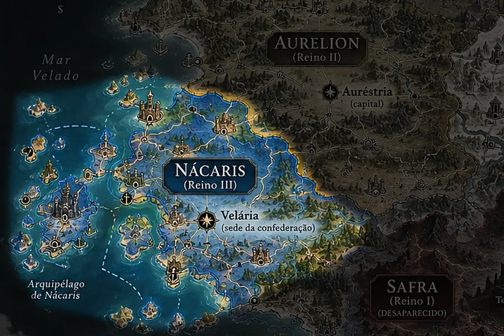

Reino
Nácaris
Confederação de cidades
Proposta

Um dos cinco reinos conhecidos, organizado como confederação de cidades.
Verbete provisório. Nome, capital e características deste reino ainda estão em desenvolvimento e podem mudar.
Relação com a Ressonância
Como os demais reinos, está ligado a fragmentos do poder primordial da Chama. A natureza dessa ligação ainda não foi documentada.
Relações com outros reinos
Nácaris está entre os cinco reinos que decidiram destruir a população de Safra, movidos pela inveja de seu poder. O papel específico de Nácaris nessa decisão ainda não foi definido.
Depois da Noite das Cinzas, Safra foi apagada da história oficial: a versão reconhecida pelos reinos admite apenas cinco.